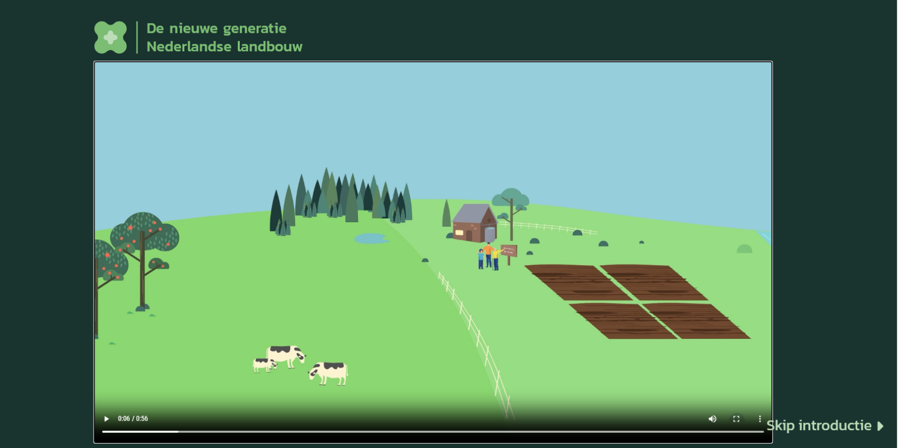
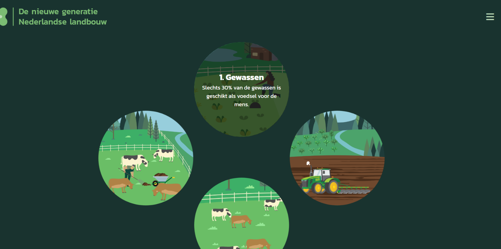

Kringlooplandbouw Animation
Another school project in cooperation with CBS, where
we worked on a multimedia story about circular agriculture.
I worked mainly on the UX and the 2D animations which I made using
Adobe Animate. From this project I learned mainly two things about animation. First of which
is the usefullness of animation is this kind of projects, because of its
ability to illustrate things that may be too costly or impossible to illustrate otherwise.
The second thing i learned is how translate complex or confusing concepts
to understandable visuals and sound.

